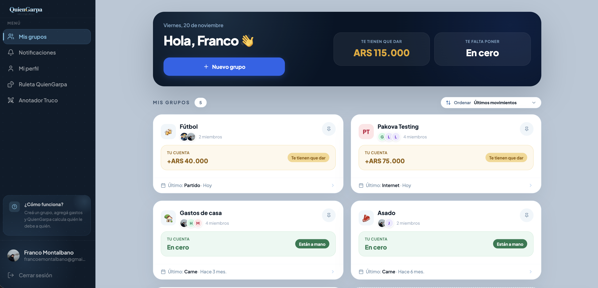

CRUD y validaciones
Gestión de Contactos
Alta, edición y baja de contactos. Validaciones de campos obligatorios, longitud y correos duplicados.
QA Manual Junior
Diseño y ejecuto pruebas funcionales a partir de especificaciones. Documento los defectos con pasos de reproducción y comparo el resultado esperado con el observado.
Rosario, Argentina · Disponible para oportunidades remotas
Prácticas de testing manual sobre aplicaciones de Proyecto Nahual. Cada proyecto incluye la matriz de casos y los defectos registrados durante la ejecución.
CRUD y validaciones
Alta, edición y baja de contactos. Validaciones de campos obligatorios, longitud y correos duplicados.
Búsqueda y filtros
Filtros por región y nombre, búsquedas parciales y ordenamiento. Revisé casos y reportes con un compañero.
Reglas y estados de juego
Colisiones, efectos de las pastillas, transiciones de nivel y registro de puntajes.
Particiones de equivalencia, análisis de valores límite y transiciones de estado.
MantisBT · Vikunja · GitHub
Aplicación web
Una aplicación para compartir gastos, calcular saldos y registrar pagos en grupo.
El proyecto incluye pruebas de endpoints y validaciones de entrada. También cubre reglas de negocio como la distribución de gastos, el cálculo de saldos y los flujos de pago.

Proyecto backend
API REST en ASP.NET Core 8 para consultar y administrar un catálogo de películas. Usa Entity Framework Core y SQL Server, con ASP.NET Identity y JWT para proteger las operaciones de escritura.
Soy Técnico Superior en Desarrollo de Software y busco mi primera oportunidad como QA Manual Junior.